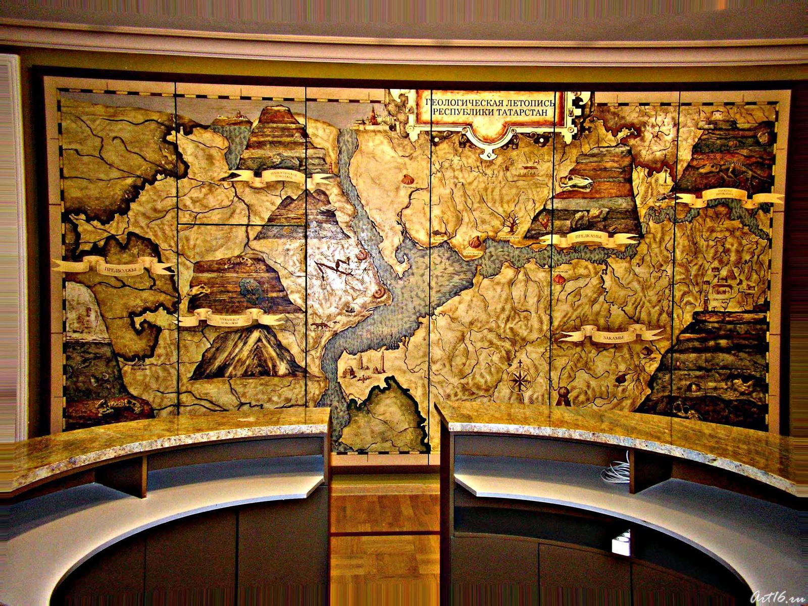

Раннее детство Земли, первые полмиллиарда лет или около того, окутаны мраком тайны. Горные породы и минералы предоставляют нам осязаемые данные о большей части исторического прошлого планеты, но мало что из горных пород и минералов сохранилось от самого древнего из периодов – гадейской эпохи. По этой причине любое описание процесса первичного охлаждения Земли и появление на ее черной поверхности воды опираются на предположения, основанные на экспериментах, моделях и расчетах. При этом неизбежны различного рода неточности.
Сейсмические наблюдения регистрируют природу и протяженность каждого из этих различающихся минералогическим составом слоев мантии, и в целом оказывается, что переходы между ними носят достаточно выраженный характер. Точная глубина залегания переходных границ между слоями мантии в разных местах слегка варьирует, где-то в пределах 16–32 км. Например, под континентами глубина границ одна, под океанами – другая, но всюду эти границы пологие и «правильные». В отличие от «идиллии» с внутримантийными границами, сейсмические данные о границе между мантией и ядром свидетельствуют о чрезвычайно сложной структуре. На первый взгляд, эта граница порождает, как и должно быть, сильное эхо. В самом деле, разница плотностей силикатной мантии и металлического ядра настолько велика, что создает физическую границу такую же резкую, как граница между водой и воздухом, что вызывает мощнейший сейсмический сигнал из глубин Земли. Эту границу – как одну из первых скрытых в глубине Земли тайн – сейсмологи зафиксировали более 100 лет назад.

Есть места, которые всегда будут вне нашей досягаемости. Недра Земли - одна из них. Но у нас есть способы понять этот неизведанный мир. Сейсмические волны, например, позволяют нам накладывать важные ограничения на структуру нашей планеты и физические свойства материалов, скрытых глубоко внутри нее. Кроме того, есть вулканические породы, которые появляются в некоторых местах на поверхности Земли из глубины и дают важные подсказки о химическом составе мантии. И, наконец, есть лабораторные эксперименты, которые могут моделировать условия недр Земли в небольших масштабах.
Новая публикация Мотохико Мураками, профессора экспериментальной физики минералов, и его команды была недавно опубликована в журнале PNAS и показывает, насколько полезными могут быть такие эксперименты. Выводы исследователей говорят о том, что многие ученые-геофизики слишком упрощенно представляют себе земные недра.
Под земной корой, толщина которой составляет всего несколько километров, находится ее мантия. Также сделанный из камня, он окружает ядро планеты, которое начинается примерно в 2900 километрах под нами. Благодаря сейсмическим сигналам мы знаем, что на глубине около 660 километров происходит резкое изменение мантии: именно здесь верхняя мантия встречается с нижней, и механические свойства породы начинают различаться, поэтому скорость распространения сейсмических волн резко меняется на этой границе.
Остается неясным, является ли это просто физической границей или химический состав породы также изменяется в этой точке. Многие ученые-геологи предполагают, что мантия Земли в целом состоит относительно последовательно из богатых магнием пород, которые, в свою очередь, имеют состав, аналогичный составу перидотитовых пород, обнаруженных на поверхности Земли. Эти посланцы из верхней мантии, которые прибывают на поверхность Земли в результате таких событий, как извержения вулканов, демонстрируют соотношение магния и кремния ~1,3.
"Предположение о том, что состав земной мантии более или менее однороден, основано на относительно простой гипотезе”, - объясняет Мураками. - А именно, что мощные конвекционные потоки внутри мантии, которые также приводят в движение тектонические плиты на поверхности Земли, постоянно перемешивают ее. Но возможно, что эта точка зрения слишком упрощена.”
В этой гипотезе действительно есть фундаментальный изъян. Общепризнано, что Земля образовалась около 4,5 миллиардов лет назад в результате аккреции метеоритов, возникших из первичной солнечной туманности, и как таковая имеет тот же общий состав этих метеоритов. Дифференциация Земли на ядро, мантию и кору произошла в рамках второго этапа.
Оставляя в стороне железо и никель, которые теперь являются частью ядра планеты, становится очевидным, что мантия на самом деле должна содержать больше кремния, чем перидотитовая порода. Исходя из этих расчетов, соотношение магния и кремния в мантии должно быть ближе к ~1, а не к ~1,3.
Это заставляет ученых-геологов задать следующий вопрос: где находится недостающий кремний, и есть очевидный ответ: мантия Земли содержит так мало кремния, потому что он находится в ядре Земли. Но Мураками приходит к другому выводу, а именно, что кремний находится в нижней мантии. Это означало бы, что состав нижней мантии отличается от состава верхней мантии.

Древние, отчетливые, размером с континент области горных пород, изолированные еще до столкновения, которое создало Луну 4,5 миллиарда лет назад, существуют на сотни миль ниже земной коры, предлагая окно в строительные блоки нашей планеты, согласно новым исследованиям.
В новом исследовании, опубликованном в журнале AGU Geochemistry, Geophysics, Geosystems, использовались модели для отслеживания местоположения и происхождения образцов вулканических пород, найденных по всему миру, вплоть до двух твердых континентов в глубокой мантии. Новое исследование предполагает, что определенные гигантские скальные области существовали в течение 4,5 миллиардов лет, с начала существования Земли.
Ранее ученые предположили, что разделенные континенты в глубинах мантии образовались из субдукционных океанических плит. Но новое исследование показывает, что эти отдельные области, возможно, были сформированы из древнего магматического океана, который затвердел в начале формирования Земли и, возможно, пережил массивное воздействие Луны.
Определение происхождения масс раскрывает более подробную информацию об их эволюции и составе, а также дает ключ к пониманию изначальной истории Земли в ранней Солнечной системе, считают авторы исследования.
Удивительно, что эти регионы пережили большую часть вулканической истории Земли относительно нетронутыми, сказал Кертис Уильямс, геолог из Калифорнийского университета в Дэвисе, штат Калифорния, и ведущий автор исследования.
Мантия - это слой горных пород, простирающийся на 2900 километров (1802 мили) вглубь Земли. Расплавленное, жидкое, металлическое ядро Земли лежит под мантией. Граница ядро-мантия находится там, где твердая мантия встречается с металлическим жидким ядром.
Ученые знали из прошлых исследований сейсмической визуализации, что два отдельных горных тела существуют вблизи границы ядро-мантия. Одно твердое скальное тело находится под Африкой, а другое-под Тихим океаном.
Сейсмические волны, колебания, производимые землетрясениями, движутся по этим массам иначе, чем по остальной мантии, предполагая, что они имеют отличные физические свойства от окружающей мантии. Но геологи не могли определить, движутся ли сейсмические волны по-разному через ядро-мантийные континенты из-за различий в их температуре, минеральном составе или плотности, или некоторого сочетания этих свойств. Это означало, что они могли только строить гипотезы о происхождении и истории отдельных скальных массивов.
“У нас были все эти геохимические измерения с поверхности Земли, но мы не знали, как соотнести эти геохимические измерения с областями недр Земли. У нас были все эти геофизические снимки недр Земли, но мы не знали, как соотнести их с геохимией земной поверхности”, - сказал Уильямс.
Уильямс и его коллеги хотели определить происхождение и эволюцию различных масс, чтобы узнать больше о составе и прошлом Земли. Чтобы сделать это, они должны были иметь возможность идентифицировать образцы на поверхности Земли с более высокой концентрацией примитивного материала, а затем проследить эти образцы до их происхождения
Ученые часто берут образцы горных пород из вулканических регионов, таких как Гавайи и Исландия, где глубокие мантийные шлейфы или столбы чрезвычайно горячих пород поднимаются из областей вблизи ядра, плавятся в неглубокой мантии и выходят далеко от линий тектонических разломов. Эти образцы сделаны из магматической породы, созданной из остывающей лавы. Авторы исследования использовали существующую базу данных образцов, а также собрали новые образцы из вулканически активных районов, таких как Острова Баллени в Антарктиде
Геологи могут измерять конкретные изотопы в магматических породах, чтобы узнать больше о происхождении и эволюции Земли. Некоторые изотопы, такие как гелий-3, являются первичными, то есть они были созданы во время Большого Взрыва. Породы ближе к земной коре содержат меньше изотопа, чем породы глубже под землей, которые никогда не подвергались воздействию воздуха. Считается, что образцы с большим количеством гелия-3 получены из более примитивных пород в мантии.
Исследователи обнаружили, что некоторые из образцов, которые они изучали, содержали больше гелия-3, что указывает на то, что они, возможно, пришли из примитивных пород глубоко в мантии Земли.
Затем исследователи использовали новую модель, чтобы проследить, как эти примитивные образцы могли попасть на поверхность Земли из мантии. Геологические модели предполагают, что шлейфы поднимаются вертикально из глубины мантии к поверхности Земли. Но шлейфы могут отклоняться от курса, отклоняться по разным причинам. Новая модель учитывала это отклонение шлейфа, что позволило авторам исследования проследить образцы до двух гигантских масс вблизи границы ядро-мантия
Сочетание изотопной информации и новой модели позволило исследователям определить состав двух гигантских масс и теоретически предположить, как они могли образоваться. Понимание состава конкретных горных массивов вблизи границы ядро-мантия помогает геологам концептуализировать древние процессы формирования Земли, которые привели к современной мантии, по мнению авторов исследования
”Это более надежная основа, чтобы попытаться ответить на эти вопросы с точки зрения не делать этих предположений о вертикально поднимающемся материале, а скорее принять во внимание, насколько сильно отклоняются эти плюмы", - сказал Уильямс.

Global Volcanism Program
Список крупнейших вулканических извержений архея (4,0 - 2,5 гигалет назад): 2,42 млрд лет назад (Gy - гигалет) - извержение верхнеархейского супервулкана Видгемута (Австралия). 2,22 млрд лет назад - магматическое происхождение траппа Ургана (Канада). 2,05 млрд лет назад - магматическое происхождение траппа Бушвельд (ЮАР). 1,75 млрд лет назад - извержение вулкана Тимптон в Сибири. 1,52 млрд лет назад - извержение вулкана Эсаканэ в Буркина-Фасо. Список крупнейших вулканических извержений протерозоя (2,5—0,6 гигалет назад) [примерно через каждые 100 миллионов лет]: 920 м.л.н. (My - мегалет) - магматическое формирование траппа Дашигоу на востоке Китая. 820 м.л.н. - магматическое формирование траппа Герднера в центре Австралии. 725 м.л.н. - магматическое формирование траппа Франклина восточнее Гудзонова пролива. Список крупнейших вулканических извержений палеозоя (570—245 мегалет назад): 370 м.л.н. - извержение вулкана Кола-Днепр [через 2 галактогода после траппа Франклина]. 252 м.л.н. - трапповые излияния, сформировавшие Сибирское плато (Россия). Вероятно, вызвало позднепалеозойскую биокатастрофу ("Большая смерть" в конце перми). Магма выходила на поверхность через трещины в земле на протяжении тысяч лет. В воздух было выброшено три миллиона кубических километров пепла, а средняя температура на Земле поднялась на 10 градусов Цельсия. В результате повысилась кислотность морей, в которых также произошло разрастание мертвых зон — областей с крайне низким содержанием кислорода. В результате исчезли 96 процентов морских видов, 73% видов наземных позвоночных и 83% видов насекомых. По оценкам ученых, обеднение биологического разнообразия длилось 60 тысяч лет. К этому времени также относят 500-километровый Кратер Земли Уилкса (самый большой, наряду с суперворонкой Шива, которая образовалась в Индийском океане одним Галактогодом позже и синхронная с Деканскими траппами), а также подводный кратер Бедут у северо-запада Австралии. Список крупнейших вулканических извержений мезозоя (245-66 мегалет назад): 200 м.л.н. - излияния в Центрально-Атлантической магматической провинции. [А близко перед этим было массовое вымирание (МВ).] 132 м.л.н. - Гуарапуава—Тамарана—Сарусас (трапповая провинция Парана-Этендека в Бразилии). 125-119 м.л.н. - излияние магмы в Онтонг-Ява. 86-61 м.л.н. - вулканическая активность в Восточном Китае. 68-60 м.л.н. (с пиком 65 м.л.н.) - трапповые излияния на плато Декан (Индия) и небывалая вулканическая активность. Вероятно, это и привело к позднемезозойской (меловой) биокатастрофе (гибели динозавров в районе "K/T границы"), а не удар суперметеорита - впрочем, последний и мог вызвать этот трапповый вулканизм. Причем, это был не один Чикслубский метеорит (65,2 м.л.н.), упавший в Мексиканский залив, но также болиды, оставившие Карскую астроблему (70 м.л.н.), кратер Мэнсон в США (рядом с "K/T границей") и подводный суперкратер Шива (~66,5 м.л.н.) в Индийском океане к западу от Индостана. Список крупнейших вулканических извержений кайнозоя (от 66 мегалет назад до настоящего времени): 37-27 м.л.н. - вулканическая активность в Восточном Китае. 30 м.л.н. - Афро-арабское трапповое излияние. 23-19 м.л.н. - вулканическая активность в Восточном Китае. 17-15 м.л.н. - трапповые излияния на плато Коламбия-Ривер (Северная Америка). 16-13 м.л.н. - вулканическая активность в Восточном Китае. 11-7 м.л.н. - вулканическая активность в Восточном Китае. Список крупнейших вулканических извержений кайнозоя (от 66 мегалет назад до настоящего времени): около 9 и 8,7 м.л.н. - суперизвержения Йеллоустонского супервулкана, причём последнее (Grey's Landing) - самое катастрофическое в его истории. 4.5-2.0 м.л.н. - вулканическая активность в Восточном Китае. 4 м.л.н. - извержение вулкана Роза. 3 м.л.н. (или 4,5—5 ?) - последнее извержение вулканов на острове Пасхи. 1,5 млн. лет назад — извержение вулкана Карымшина на Камчатке — единственного супервулкана России. В результате извержения образовались вулкан Больше-Банная и конус Бабий камень вулкана Бархатная сопка. 1.5-0.8 м.л.н. - вулканическая активность в Восточном Китае. Список крупнейших вулканических извержений кайнозоя (от 66 мегалет назад до настоящего времени): 1,37 млн. лет назад - извержение тефры Guaje в кальдере Толедо (Северная Америка, Нью-Мексико). 1,09 млн. лет назад - извержение тефры Tsankawi в кальдере Вэллс (Северная Америка, Нью-Мексико). 700 тыс. лет назад (Ky - килолет) - извержение тефры Бишопа в кальдере Лэнг Вэлли (Северная Америка, Калифорния). 639 тыс. лет назад — последнее крупное извержение в зоне Йеллоустоунской горячей точки, в результате которого сформировалась Йеллоустоунская кальдера. 580-60 т.л.н. - вулканическая активность в Восточном Китае. Список крупнейших вулканических извержений кайнозоя (от 66 мегалет назад до настоящего времени): 254 тыс. лет назад — извержение Вакамуру в вулканической зоне Таупо (Новая Зеландия). Крупнейшее извержение в Южном полушарии в позднем четвертичном периоде. Около 80 тыс. лет назад - извержение вулкана Санторин у Крита. 73—74 тыс. [называют и 75 тысяч] лет назад — извержение супервулкана Тоба в Индонезии — крупнейшее на Земле за последние 2 или даже 25 миллионов лет. В этот же период (73 тыс. лет назад) взорвался 2,8-километровый вулкан на острове Фогу (о-ва Зелёного мыса у Африки), что породило цунами высотой 300 метров, захлестнувшей материк вглубь на 50 км. 39 тыс. лет назад – извержение стратовулкана Лациале в Альбанских горах близ Рима. Список крупнейших вулканических извержений кайнозоя (от 66 мегалет назад до настоящего времени): 17,7 тыс. лет назад - извержение щитового вулкана Такахе в Антарктиде, длившееся 192 года. Около 15 тысяч лет назад - мощное извержение вулкана на Азорском острове Сан-Мигел, создавшее 4-километровую воронку, ныне наполненную водой и ставшей красивейшим двойным озером Лагоа-ду-Фогу. Список крупнейших вулканических извержений кайнозоя (от 66 мегалет назад до настоящего времени): 14–10,5 тыс. лет назад - повышение вулканической активности: 12 600 лет назад - предполагаемое извержение тефры исландским вулканом Катла; 1 080 лет назад - вулканическая катастрофа в бассейне Рейна; 11 250 лет назад - островодужное извержение вулкана Ледяной Пик (Северная Америка); 12–10 тыс. лет назад - извержение вулкана Эйфель (Альпы); 10 600 лет назад - извержение вулкана Ведде (где-то в районе северо-восточной Атлантики); 10 600 лет назад - извержение вулкана исландского Катла, что стало причиной появления толстого слоя пепла, обнаруженного в кернах Дании, Северной Атлантики, Шотландии; Список крупнейших вулканических извержений кайнозоя (от 66 мегалет назад до настоящего времени): ок. 8600 лет назад (6600 лет до н.э.) - извержение исландского стратовулкана Баурдарбунга. ок. 5000 лет назад (3 тыс. лет до н.э.) - островодужное извержение вулкана Мазама (Северная Америка). 1564 год - последнее извержение сан-мигельского вулкана, в кратере которого находится озеро Лагоа-ду-Фогу. Максимальная глубина озера — 30 м, длина 7 км, ширина — 4 км, площадь — 13,6 км². 1597 год - извержение вулкана Пэктусан (Корея). Список крупнейших вулканических извержений кайнозоя (от 66 мегалет назад до настоящего времени): извержения XVII века: 1612 год - вулканическая активность Катлы с предшествующим извержением Эйяфьядлайёкюдля (Исландия). 1631 г. Во время извержения Везувия 16-17 февраля потоки лавы разрушили пять городов, расположенных у склонов вулкана. Еще несколько городов и деревень были захлестнуты селевыми потоками. По разным оценкам, погибло от 4 до 18 тыс. человек. 1668 год - очередное извержение вулкана Пэктусан (Корея) [через 71 год после предыдущего]. Список крупнейших вулканических извержений кайнозоя (от 66 мегалет назад до настоящего времени): извержения XVII века: 1669 г. — извержение Везувия изменило очертания берега настолько, что замок Урсино, стоявший у самого моря, оказался в 2,5 км от воды. Лава накрыла городские стены Катании, поглотив дома более 27 тысяч человек. 1693 г. - извержение Этны, вызвавшее Большое Сицилийское землетрясение. Список крупнейших вулканических извержений кайнозоя (от 66 мегалет назад до настоящего времени): извержения XVIII века: 1702 год - очередное извержение вулкана Пэктусан (Корея) [через 34 года после предыдущего]. 1766 г. 23 октября на острове Лусон (Филиппины) начал извергаться вулкан Майон. Поток лавы уничтожил десятки деревень и 2 тыс. их жителей. 1772 г. В Индонезии на о.Ява взорвался вулкан Папандаян. Образовался заполненный лавой провал шириной 10 и длиной 25 км. Погибли 3 тыс. человек — все население 40 деревень, располагающихся в этой местности. 1779 г. В мае началось очередное извержение Везувия. Тучи пепла и вулканических бомб обрушились на г. Оттавиано. Погибло около тысячи человек. Список крупнейших вулканических извержений кайнозоя (от 66 мегалет назад до настоящего времени): извержения XVIII века: *1783–1784 гг. - извержение вулкана Лаки (где?). 1793 г. В феврале начал извергаться Везувий. Потоки лавы захлестнули г.Терре-Даль-Греко. Погибло около тысячи человек.1 апреля произошел взрыв вулкана на острове Унсен (Япония). Остров развалился на части и полностью ушел под воду. Погибли все его жители — 53 тыс. человек. Список крупнейших вулканических извержений кайнозоя (от 66 мегалет назад до настоящего времени): извержения XIX века: 1814 г. 1 февраля на острове Лусон (Филиппины) произошло извержение вулкана Майон. Гора выбросила в небо фонтан вулканической лавы и пепла, массы которых обрушились на близлежащие города. Погибло свыше 2200 человек. 1815 г. - островодужное извержение вулкана Тамбора (Вест-Индия) [погибло 80 000 чел.], Это самое мощное из достоверно известных вулканических извержений состоялось в начале апреля 1815 года. Когда на острове Сумбава в Индонезии взорвался вулкан Тамбора, деревни близ его склонов просто-напросто исчезли, остальные населенные пункты острова были разрушены взрывной волной и градом вулканических бомб. Список крупнейших вулканических извержений кайнозоя (от 66 мегалет назад до настоящего времени): извержения XIX века: ...На побережья обрушились цунами. Пепел затмил небо и усеял землю на обширной территории, даже на расстоянии свыше 1 тыс. км. от вулкана. На Сумбаве погибло 100 тыс. человек, половина из которых стали жертвами голода, разразившегося из-за гибели сельхозугодий. 18 июня 1815 г. Наполеон потерпел поражение в битве про Ватерлоо - считается, что из-за плохой погоды и проливных дождей [а как же его противники - таки успели взять зонтики?]. 1816 г. из-за скопления вулканической пыли в верхних слоях атмосферы в Северной Америке и Европе на протяжении лета стояли холода, несколько раз выпадал снег. Морозы погубили весь урожай. В европейских странах, разоренных наполеоновскими войнами, это привело к голоду, ставшему причиной смерти тысяч людей. Список крупнейших вулканических извержений кайнозоя (от 66 мегалет назад до настоящего времени): извержения XIX века: 1821—1823 гг. - вулканическая активность Катлы с предшествующим извержением Эйяфьядлайёкюдля (Исландия). 1875? г. - извержение вулкана Котопахи (Эквадор) [антипод Кракатау]; 1882 г. - извержение вулкана Эль-Чичион (Юж.Ам.?); 1883 г. - островодужное извержение вулкана Кракатау (Вест-Индия). Список крупнейших вулканических извержений кайнозоя (от 66 мегалет назад до настоящего времени): извержения XX века: 1903 г. - извержение вулкана Пэктусан (Корея). 1910 г. - извержение исландского стратовулкана Баурдарбунга; 1912 г. - островодужное извержение вулкана Катмай (Северная Америка) [вскоре после Баурдарбунга в Исландии]; 1956 г. - островодужное извержение вулкана Безымянный (центр Камчатки); 1963 г. - островодужное извержение вулкана Агунг (Вест-Индия); Список крупнейших вулканических извержений кайнозоя (от 66 мегалет назад до настоящего времени): извержения XX века: 1964 г. - островодужное извержение вулкана Шивелуч (Камчатка, севернее Безымянного); 1980 г. - островодужное извержение вулкана Сент-Хеленс (Северная Америка) [через 500 лет после предыдущего]; 1985 г. - активность вулкана Невадо дель Руис (Южная Америка), повлекшая смерть 25 000 колумбийцев. Список крупнейших вулканических извержений кайнозоя (от 66 мегалет назад до настоящего времени): извержения XXI века: 2010 г. - извержение исландского вулкана Эйяфьядлайёкюдль 2014 г. - извержение исландского стратовулкана Баурдарбунга